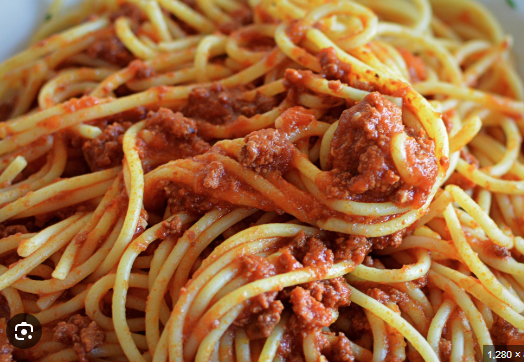

Home
Spaghetti Recipe

Description
This spaghetti recipe features a rich and savory tomato sauce made with fresh ingredients and herbs. It's a perfect dish for a comforting family meal!
Ingredients
- 12 oz spaghetti pasta
- 2 tbsp olive oil
- 1 onion, chopped
- 3 cloves garlic, minced
- 1 (28 oz) can crushed tomatoes
Steps
- Cook spaghetti according to package instructions until al dente. Drain and set aside.
- In a large skillet, heat olive oil over medium heat. Add onion and garlic, and sauté until softened.
- Add crushed tomatoes, basil, oregano, salt, and pepper. Simmer for 20 minutes, stirring occasionally.